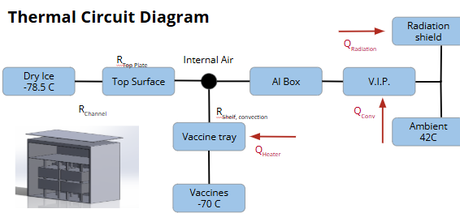

Advanced Thermal Systems Design Project at Carnegie Mellon University
Project Summary
This project tackles the problem of vaccine delivery to remote regions using an air-droppable cryogenic container. The system is capable of maintaining temperatures of -70°C for over 12 hours using a combination of dry ice, vacuum insulation, and active cooling through Peltier cells and fans.
Design Objectives
Ensure -70°C temperature maintenance for 12+ hours during transport.
Survive impact from air-drop (ground and water).
Allow remote monitoring with temperature and connectivity systems.
System Overview
The design uses vacuum insulation panels, aluminum heat spreaders, and internal fans to manage thermal gradients.
Temperature is stabilized using a dry ice chamber and actively cooled with Peltier elements. Electronics are managed through a Starlink-enabled control board and battery pack.
Manufacturing & Assembly
The unit was designed with off-the-shelf components where possible and assembled using simple hand tools. Key systems include a custom aluminum shelf, dry ice containment, integrated electronics, and thermal insulation layers.
Watch the assembly video:
Short animation showing how the system components come together.
Thermal Performance
Steady-State: Validated cooling capacity under 42°C ambient and 1000 W/m² solar loading.
Transient: Simulations based on South Sudan weather data confirmed sustained performance.
Insulation Efficiency: Outer shell and radiation shield limit heat transfer significantly.
Design and Simulation Gallery

Final Outcomes
Validated Cold Chain: Simulations and calculations confirm 12-hour maintenance at -70°C.
Durable Packaging: Built for both land and water airdrop impact resilience.
Cost Effective: Under $10,000 including manufacturing, electronics, and deployment.